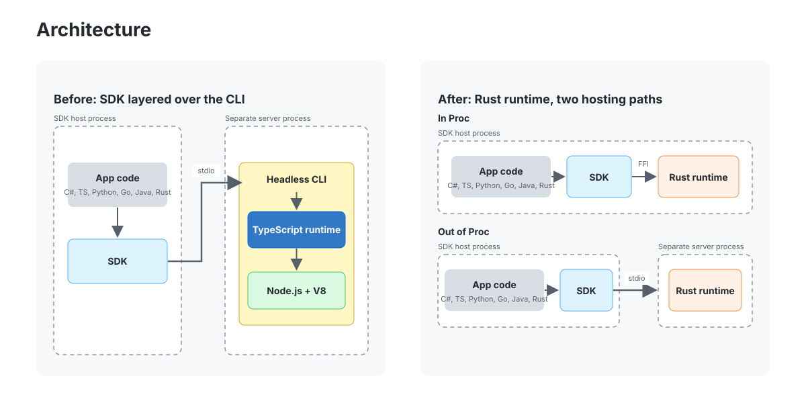
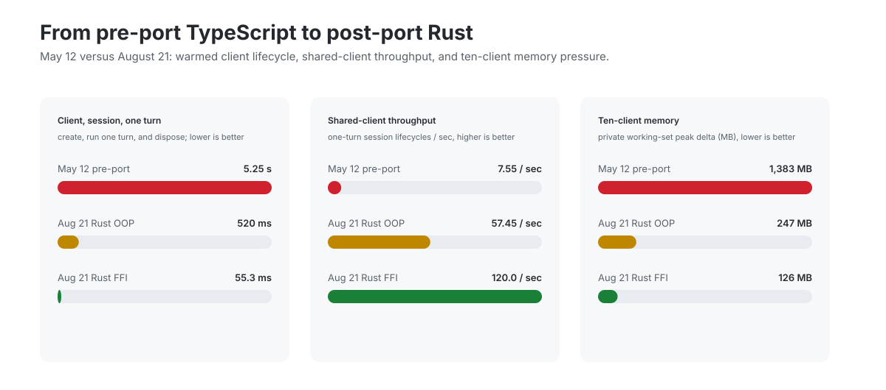
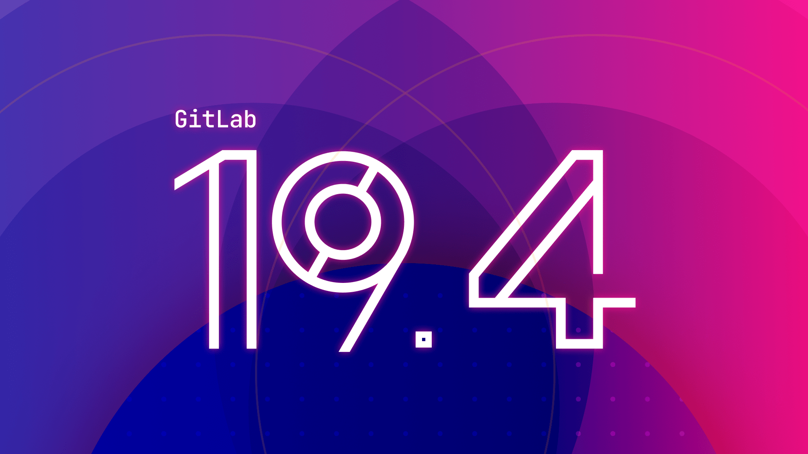
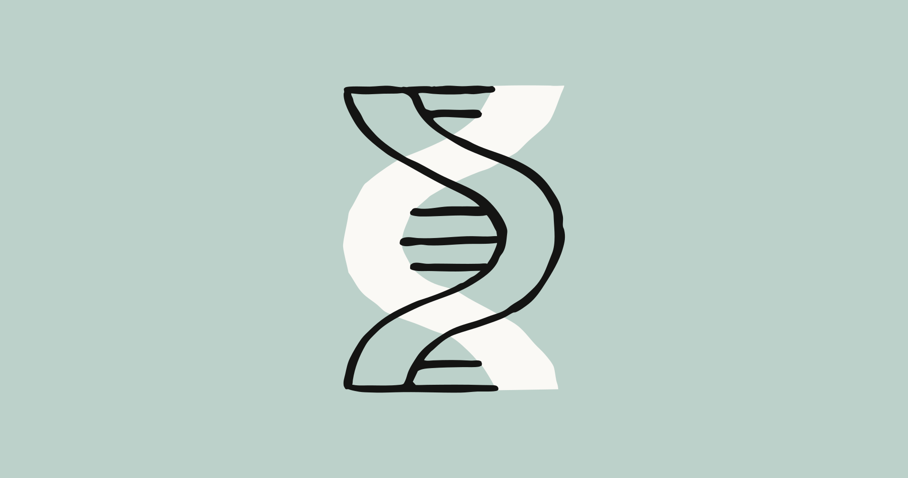

AI Intelligence Daily · 2026-09-18
/goal+MCP、Computer effort 产品化垂直工作台与成本档位。国内一线 Desktop（小艺/飞书/AStudio/MiMo）本窗无实质 UPDATE。
专栏一｜新闻
1. GitHub Copilot Agent Runtime → Rust（进程内 Harness）
事实
GitHub Blog（article:published_time 2026-09-17T00:26:43Z）：Copilot agent runtime 自 TypeScript/Node 原地迁至约 832,378 行生产 Rust；128 PR / ~14.5 周 / ~135 次发布；2026-08-21 起生产路径 100% Rust。Runtime 以 C ABI 进程内嵌入，六语言 SDK 可 FFI；仍保留 JSON-RPC 进程外。性能（C# SDK）：建连+会话+一轮约 5.25s → 1.33s（进程外）/ 292ms（进程内）。本窗未见 in-process 默认化或公开 SDK follow-up。
判断
一线 Work/Agent 共享 Runtime / 进程内密度 工程一手信号——harness 选型与性能预算级；09:25 已闪讯，日报完整收录。


GitHub Blog · 快讯 flashes/2026-09-17-0925.md
2. 腾讯 BrowserSkill CLI 0.3.0
事实
GitHub release cli-v0.3.0：与昨日报 ext-v0.3.0 同代能力对齐——跨 frame/视觉校验、host-managed daemon、本地任务审计、全页截图、远程 gateway / 后台任务等。仓库 ★约 4107。无产品海报配图。
判断
CLI 侧执行面追上 Extension——登录态浏览器 + 沙箱 + 审计成套，利于 Agent Harness 落地。勿写成第二次「全新产品」。
3. OpenAI Astra for Law
事实
GPT-6 Astra + Legal Search Index（文称 >230M URLs）+ plugins（X 称 26 partner + 47 community）；Trusted Access（ChatGPT+Codex）对精选律所；API soon。meta published_time 为 Sep 9，以公开宣布日为准。HN ≈259p / 291c；X 主帖 ≈8660 likes / ~1.60M imp。
判断
垂直领域 Agent 工作台 + 检索索引 + 插件生态——Agent Internet 与专业 Work Agent 双相关。
4. GitLab 19.4：Duo CLI /goal + MCP + 托管开源权重
事实
/goal（public beta）：目标驱动至完成或报告未解决项，并独立模型验证。MCP tools public beta：只读默认 Always Allow，写/合并需评审。托管开源权重：Kimi K3 / GLM 5.3 / MiniMax M3；文称最高约 4× calls / GitLab Credit。
判断
Agent Loop（goal+verify）+ MCP 治理 + 多模型路由——Work/Agent 引擎高相关。

Duo CLI · MCP · Open weights
5. Perplexity Computer：effort 档位
事实
Light / Standard / High / Ultra 四档：预设 orchestrator 模型 + reasoning depth。官方：web 可用；mobile/desktop soon。X ≈353 likes / ~94k imp。HP/CobbleDB 无 UPDATE。
判断
Work Agent「成本-深度」控制面产品化；Desktop 仍 soon，未到强 A Desktop 条。
6. Anthropic LSVP（生命科学验证准入）
事实
Life Sciences Verification Program beta 开放申请；首次含 Mythos；经 Claude Science / Claude.ai / Claude Code / API。Cowork/Mods 无 UPDATE。
判断
安全/准入产品化——对 Agent 权限分级有间接启示，非 IDE harness shipping。

7.（交叉）Cline Desktop v0.0.31 SSH remote
事实
Desktop v0.0.31：SSH remote（agent tools/Git/session 远程，UI 本地）。★约 68551。详见开源雷达。
专栏二｜话题热议
T1 Astra for Law：HN ≈259p / 291c；X ≈8660 likes / ~1.60M imp——垂直法律 Agent 双热。
T2 Skillsync Launch HN：≈42p / 46c；旁证 skillsynchq/txcript ★≈103——可移植会话 / harness 可移植性。
T3 Fowler「I Don't Like LLMs」：HN ≈203p / 234c——观点栏短记，非 shipping。
T4 V2EX 上下文窗口：t/1242828，约 2 回复——国内弱信号。
T5 MiMo RL notices：窗内 2 条 infra 重启；训练透明度 near-miss，非 Desktop shipping。
专栏三｜开源雷达
Tencent/BrowserSkill★≈4107，cli-v0.3.0（主推；+昨日报 ext 0.3.0）cline/cline★≈68551，Desktop v0.0.30 / v0.0.31 SSHHarnessRouter/harnessrouter★≈1458，v0.18.1 + Kimi Code CLI baseFission-AI/OpenSpec★≈68920，v1.13.1 安全加固Tencent/WeKnora★≈26180，热无新 tag（仍 v0.8.0）- Claude Mods #91870 仍 open（195 comments）— UPDATE-only，非 GA
- 旁证：
cloudflare/security-audit-skill★≈10589；alibaba/open-code-review★≈34687（勿夸大）
重点事件新进展
Copilot Rust：快讯→日报完整收录；follow-up SDK/in-process 默认未见。
BrowserSkill：ext 0.3.0 → CLI 0.3.0 配套。
小艺 Work：仍 0.7.0，manifest 未变。
飞书 / AStudio / NaviX / SAEP / DeepSeek Harness / MiMo Desktop：无实质 UPDATE。
Claude Mods：仍 open。· Cursor changelog：仍 Projects Sep 10。
趋势与吸收
共享 Runtime 工程化、浏览器 CLI/扩展同代、垂直工作台、goal+verify、effort 成本档——五线同窗。
智能体互联网：Astra 插件/Trusted Access；GitLab MCP 只读默认；BrowserSkill gateway 审计。
Work·Agent 引擎：Copilot 进程内 harness；GitLab /goal 校验循环；BrowserSkill daemon/视觉/审计；Computer effort；Cline SSH remote。
跟踪 / 价格
继续盯：Copilot in-process/SDK；BrowserSkill gateway；Astra API；GitLab beta→GA；effort→desktop；小艺/飞书/AStudio/MiMo；SAEP；Mods；Cursor；DeepSeek Harness。
价格：今日未见重要新促销。NaviX 仍 ¥5999；GitLab open-weight「约 4× calls/Credit」属平台 credits 叙事，非终端调价。